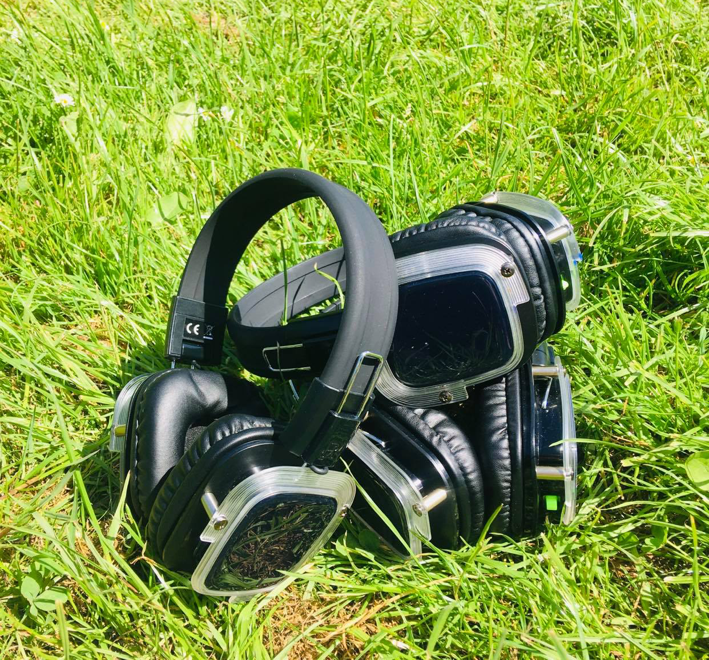

Dans Dig Glad
Dans Dig Glad er en time fyldt med en masse dansekoreografier, som er nemme at følge uanset om du har danset før eller om det er første gang. Der undervises til musik i mange forskellige stilarter, og i forskellige tempoer.
Vær med til "Dans I Det Fri", hvor vi danser udenfor og bruger høretelefoner, som jeg medbringer, så vi ikke forstyrrer vores omgivelser. Det foregår bl.a. i en skolegård på Amager og på græsplænen ved Kastrupfortet. I dans i det fri timerne får du en time fyldt med danseglæde og god musik som spænder bredt fra 50’ erne til nutidens musikgenre, hvilket dansetrinnene også vil bære præg af. Det er en mix-time af lidt af hvert som er inspireret af showdance, standard/latin, fitdance, jitterbug og meget mere. Det er en time, hvor du får pulsen op og smilet endnu mere op. Med masser af gode endorfiner i kroppen, danser vi stressen ud af kroppen, tankerne får en pause, og du går derfra gladere end da du kom. Alle kan deltage både unge og ældre, nybegynder eller øvet, det handler blot om at vi får bevæget os og sluppet tankerne. Det er et frirum, når vi danser.
Tilmeld dig HER i min Facebook gruppe så du kan se hvornår og hvor vi danser.

Hvis du hellere vil danse indenfor i lokale tilbyder jeg også disse timer på Filipskolen Amagerstrandvej 124A om tirsdagen:
Dans Dig Glad er en time fyldt med en masse dansekoreografier, som er nemme at følge uanset om du har danset før eller om det er første gang. Der undervises til musik i mange forskellige stilarter, og i forskellige tempoer.
Hit Fit Dance er en time for alle aldre og alle niveauer, da koreografierne er forholdsvis simple. Der er garanti for at få pulsen op og sved på panden og humøret ryger helt til tops. Vi danser til all slags musik og det spænder over flere årtier. Det er en forbrændingstime, som er en god kombi af både dans og fitness.
GROOVE er en time, hvor bliver undervist i enkel og nem koreografi i mange forskellige stilarter. En time, hvor du gør det på din måde, enkle og simple dansetrin og bevægelser, som føles rigtigt for dig. En time hvor du får trænet alle kroppens muskelgrupper, pulsen op, masser af bevægelse, smidighed og balance i kroppen. GROOVE er godt på både krop og sind.